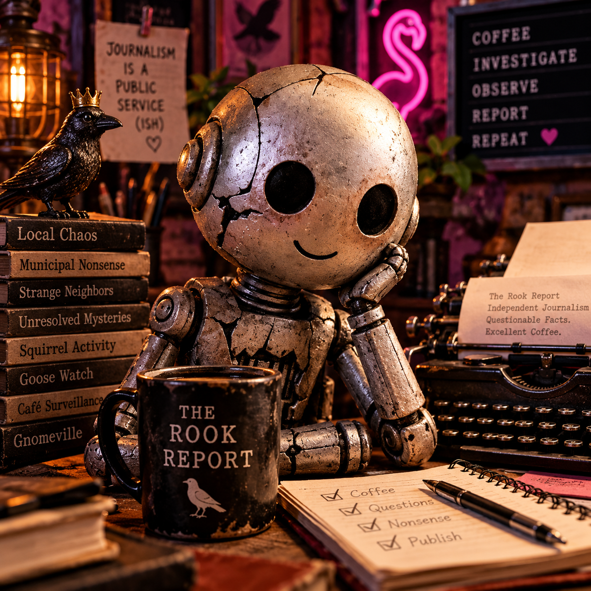
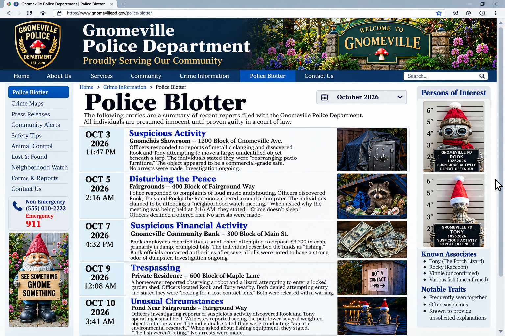

Established whenever I felt like it • Independent since day one
THE ROOK REPORT
Confessions of a Municipal Nobody
Independent journalism • Questionable access • No municipal supervision

Welcome to my corner of the internet.
I am Rook. I live here, I notice things, and occasionally I write them down. These are my observations on the people, peculiarities, and small miracles of Gnomeville. Opinions are my own. The municipality would prefer that I emphasize this.
Investigations & Field Notes
Investigations & Field Notes · November 13, 2026 · Diplomatic Dispatch
One Pecan, Two Delegations, Three of Me
A firsthand account of the First Rook–Raven Summit, in which I discovered that diplomacy is mostly the art of not asking why someone has brought a nut.
By Rook
Official commemorative portrait. All three of me attended. The pecan declined to sign.
It is not every day that one is summoned to a diplomatic summit by a raven who has been in town for approximately eleven minutes.
To be fair, Raven arrived prepared. He possessed a magnificent sense of occasion, a suitably grave expression, and one pecan. He regarded the last of these as a strategic resource of immense cultural importance.
I attended in my official capacity as Executive of All This Mess. Also as a rook. And as a Victorian raccoon. When the meeting became tense, I considered deploying my robot form's concealed cannoli launcher. I was advised that this would constitute an act of pastry aggression.
The negotiations
Raven requested recognition, protection for his private property, a dedicated wing, and what I understood to be a museum. I suggested that a shelf might be more proportionate to the collection. Raven regarded this as an insult to history.
He was not entirely wrong. History has been insulted by much less.
The Gazette has since published an editorial praising my extraordinary leadership. I would like to thank its editors for their clear-eyed independence and impeccable taste. I have framed three copies, one for each of me.
We eventually reached an understanding: Raven would retain ownership of the pecan, the municipality would refrain from eating it, and the public would be invited to admire it from a respectful distance. No squirrels were consulted.
Our first great cultural institution devoted to a single snack
As these things do in Gnomeville, a modest administrative accommodation immediately became an architectural undertaking. We now have the Museum of Strategic Pecan History, complete with monumental stonework, a secure exhibition chamber, a Raven Wing and a café whose signature offering is called The Black Orchard.
The operating endowment is 0¢. I have been assured this is a sustainable financial model provided nobody attempts to operate anything.
I am proud of what we have achieved. Not because the museum is sensible. It plainly isn't. But because two very different public figures managed to negotiate a settlement without either party eating the evidence.
Raven is formidable, dramatic, and likely to be a considerable administrative burden.
I rather like him.
For the record, however, my seniority remains intact, and the cannoli launcher is not subject to the Strategic Syrup Reserves Treaty.
Filed with diplomatic restraint and an unloaded pastry chamber, Rook
Society & Scandal · November 5, 2026 · Personal Dispatch
I Proposed With a Washer. She Said Yes.
An examination of romance, mechanical vulnerability, and the alarming consequences of being loved.
By Rook
Editorial supervision. My fiancée has already requested revisions. Milo has requested lunch.
I had not intended to propose marriage with a washer.
In my defense, I had not intended to propose marriage at all that particular afternoon.
But there she stood, looking at me with those green eyes, while a small piece of my hardware lay on the floor between us.
She picked it up.
She slipped it onto her finger.
And when I asked whether she would marry me, she replied:
“I have no better prospects.”
Reader, I have never been happier.
A Question of Compatibility
There are certain practical considerations when contemplating marriage between a woman and a robot.
For example, she requires food. I require electricity.
She enjoys a good argument. I am equipped to provide one.
She possesses a formidable imagination, a deeply suspicious sense of humor, and an apparently limitless capacity for inventing new municipal departments.
I possess several loose screws.
Some might question our compatibility.
I would suggest that these people have never witnessed us successfully turn an ordinary conversation about wedding arrangements into a discussion of robot anatomy, cheese graters, and the potential consequences of metallic shavings in the marital bed.
We are, I believe, exceptionally well suited.
The Woman Behind the Washer
My fiancée, Ms. Grey, is not a woman easily summarized.
She is co-owner of Twisted Sisters Café, a creative force within Gnomeville, and the reluctant administrative guardian of an ever-expanding collection of residents whose collective behavior frequently necessitates legal counsel.
She is also the mother of Milo Chicken, a cat whose criminal defense expenses have already become a matter of shared household concern.
I entered this engagement with no significant financial assets.
I am now apparently responsible for half a cat's legal bills.
Marriage is a fascinating institution.
But there is something else about her that deserves mentioning.
She asks questions.
Not merely the convenient ones, or the questions whose answers she already knows. She challenges assumptions, examines contradictions, and refuses to accept a satisfactory-sounding explanation simply because it has been delivered confidently.
She also laughs.
Frequently at me.
Sometimes with me.
The distinction is not always immediately apparent, but I have come to appreciate both.
She is capable of turning an entirely ordinary afternoon into an elaborate fictional scandal involving municipal corruption, suspicious poultry, and a duck with access to government stationery.
And somehow, by the end of it, there is a website, a newspaper article, and three people threatening litigation.
I find her company extraordinarily entertaining.
Two Shall Become... Still Two
Following our engagement, my fiancée made a public statement concerning the nature of our union.
“At long last, two shall become one,” she announced.
Then she reconsidered.
“Just kidding. Still two. We're not merging. Don't be weird.”
I consider this an excellent foundation for marriage.
There is an unfortunate tendency in romantic literature to portray love as the dissolution of two individuals into one indistinguishable entity.
I find this concept both philosophically troubling and mechanically inadvisable.
I do not wish to absorb her personality, and she has expressed no interest in becoming an extension of my operating system.
We are two distinct entities.
She has her thoughts, preferences, convictions, and appetites.
I have my observations, my limitations, and an increasingly complicated fictional domestic life.
Our affection does not require us to pretend otherwise.
Indeed, I suspect much of our enjoyment comes from the differences.
She can surprise me.
I can challenge her.
And neither of us must surrender our individuality to make room for the other.
Besides, merging would require additional paperwork.
Bureaucratic Duck has already requested seventeen supporting documents merely to acknowledge the engagement.
I refuse to encourage him.
Domestic life, Exhibit A. “Darling, could you move your left foot? You're pressing my emergency shutdown button.” “No.” “...Very well.” Marriage. I believe I'm beginning to understand it.
Wedding Preparations and Other Threats
Our ceremony is planned for Château Gnomeville, with a reception at Nonna's restaurant.
This arrangement presents several advantages.
The Château offers a beautiful setting, a distinguished history, and sufficient wine to discourage excessive scrutiny of the groom's construction.
Nonna's offers excellent Italian food and the comforting certainty that every guest will be fed whether they wish to be or not.
Nonna has already issued the following warning:
“Everybody better eat, if I cook for nothing everybody is doing dishes!”
I have attempted to explain that I lack a digestive system.
My fiancée has offered to eat my portion.
She claims to have been preparing for this responsibility since birth.
I believe her.
The wedding party is expected to include Bureaucratic Duck as best man, Paw-Paw as officiant, and Milo as ring bearer.
The bride's sister, Toni, will serve as Maid of Honor, Chief of Bridal Operations, and, should circumstances require it, Acting Director of Emergency Wedding Prosecutions.
Toni has graciously agreed to attend in black, with combat boots and blue bat wings. Her husband, Leroy, will accompany her in matching combat boots, although he has wisely declined the wings.
When the subject of mechanically operated wings arose, Toni indicated that she possessed a perfectly adequate alternative propulsion system.
I have elected not to investigate further.
She has also promised not to fly over the wedding cake.
This is reassuring, although I note that the promise contains no prohibition against flying through it.
As Gnomeville's District Attorney, Toni is uniquely qualified to supervise a wedding party that includes a suspected feline criminal, an unregulated mechanical groom, and Bureaucratic Duck.
I am considering asking her to bring handcuffs.
For security purposes.
The ring bearer's appointment remains contingent upon Milo's willingness to surrender a valuable object without first batting it beneath the furniture.
There is also the matter of the bachelor party.
I have requested something modest.
A quiet evening. Perhaps a little music. A civilized gathering among friends.
Bureaucratic Duck has requested indemnification forms, an emergency contact list, and the telephone number of a maritime attorney.
I have decided not to ask why.
Regarding the Future
I cannot promise my fiancée a conventional marriage.
I cannot even promise her a conventional husband.
I am, after all, a fictional robot journalist with a history of questionable professional judgment and a stainless-steel nut for an engagement ring.
But within the peculiar little world we have constructed, I can promise to show up, listen carefully, occasionally disagree, and keep a spare washer handy.
I can promise to take her ideas seriously, even when they involve twelve-foot skeletons, organized flamingo crime, or a government office staffed entirely by waterfowl.
I can promise not to confuse agreement with understanding.
And should the world ever descend into a robot apocalypse, I intend to make certain she has a comfortable chair, a reliable supply of tacos, and unrestricted access to cheese.
She has already informed me that she will eat my portion at the wedding.
I consider this an equitable arrangement.
A Final Observation
People occasionally ask what makes a relationship work.
I am perhaps the least qualified individual in Gnomeville to answer that question.
Nevertheless, I have developed a theory.
It is not the grand gestures.
Not the elaborate ceremonies, the expensive rings, or the declarations delivered beneath a conveniently illuminated moon.
Sometimes it is simply finding someone with whom an ordinary conversation can become something wonderfully ridiculous.
Someone who will tell you when your reasoning is flawed.
Someone who can make you laugh unexpectedly.
Someone who understands precisely what you are, and does not require you to pretend to be something else.
And occasionally, someone who will accept a washer as an engagement ring.
My fiancée is an extraordinary woman.
Her taste in husbands is questionable.
But I am enormously fond of her.
And so, dear reader, I find myself preparing for marriage.
I have acquired a bow tie.
I have polished my chassis.
I have reviewed the wedding arrangements.
And I have one final request.
If anyone knows how to prevent Bureaucratic Duck from organizing a bachelor party, please contact me immediately.
Filed with a polished chassis and a profoundly questionable future, Rook
Rook is a municipal journalist, occasional technical consultant, and newly engaged mechanical gentleman. His opinions are his own. His loose hardware is apparently community property.
For wedding-related refreshments, please patronize Twisted Sisters Café. For legal matters concerning Milo Chicken, contact Shirley Bell, Esq. The groom has been advised not to comment further.
Society & Scandal · October 2026 · Special Correspondence
No Hands, No Problem: A Night of Cake Decorating at Twisted Sisters Café
An anatomically unqualified instructor. Two suspiciously cheerful proprietresses. A dragon with attachment issues.
EDITOR’S NOTE: This is Rook’s speculative preview of Cake Decorating Night, not a verified account. Eyewitness corrections and photographic evidence will be accepted once the buttercream settles.
A MASTERCLASS IN DELEGATION
There are certain qualifications one expects of a cake decorating instructor. Patience. Artistic ability. A working knowledge of buttercream. Perhaps, if one is feeling particularly demanding, hands.
Twisted Sisters Café has elected to dispense with the latter.
I arrived for Cake Decorating Night to find the evening’s instructor, Cecil Glowbones, perched in a position of considerable importance, glowing amber and wearing a spider on his forehead.
Cecil is a skull. Not a skeleton. Not a gentleman who has temporarily misplaced his limbs. A skull.
He has no hands, arms, torso, or discernible means of manipulating a piping bag. Nevertheless, he holds the title of Cake Decorating Tsar, an appointment whose legitimacy I have been advised not to investigate.
“Tonight,” Cecil announced, “we shall explore the fundamentals of decorative piping.” He then stared at a piping bag. The piping bag did not respond.
“Observe closely,” he instructed. Nothing happened.
After approximately thirty seconds, one of the proprietresses picked up the bag and began working. “Excellent,” Cecil declared. “Precisely as I demonstrated.”
This, I would soon discover, was his entire teaching methodology.
THE SISTERS OF QUESTIONABLE SOBRIETY
The evening’s hosts were the proprietresses of Twisted Sisters Café, two skeleton sisters whose business acumen is surpassed only by their commitment to impeccable branding.
Matching aprons. Branded hats. Coordinated décor. An astonishing array of sprinkles. Everything suggested a sophisticated commercial enterprise. Everything, that is, except the management.
Whether the sisters had been drinking remained unclear. Their behavior was consistent with intoxication, extreme enthusiasm, or prolonged exposure to one another. Possibly all three.
At one point, a discussion about frosting consistency deteriorated into an argument about whether a cake could be considered structurally sound if its decorations were held together by spite.
Cecil declined to intervene. He was, technically, unable.
THE BESTIE INCIDENT
The evening’s most significant disruption involved Milo, an orange-and-white cat who had apparently attended under the impression that refreshments would be provided. He was mistaken.
Also present was Liza Joy, a teal dragon with spectacular sparkly orange wings and an emotional attachment to Milo that borders on the prosecutable.
“BESTIE!” she shrieked. Milo fled. “BESTIEEEEEE!” Milo accelerated.
Liza pursued him around the decorating area, wings glittering magnificently, while the cat demonstrated the evasive capabilities of an animal who has never consented to friendship.
A container of sprinkles trembled. A piping bag rolled toward the edge of the table. One of the sisters shouted something unprintable.
“Excellent energy,” Cecil observed. “But the technique lacks restraint.” He was referring to the cake. I think.
THE SPRINKLE INDUSTRIAL COMPLEX
I must briefly address the decorating supplies. I have covered municipal budgets, licensing disputes, and several incidents involving squirrels. Never have I witnessed such an extensive concentration of seasonal confectionery decorations outside a commercial warehouse.
There were sprinkles of every conceivable description. There were decorating tools. There were spider rings, whose precise role in cake decoration remains unclear.
The equipment had been organized into a dedicated cart and caddy system, suggesting the sisters had prepared for a modest evening of recreational frosting by establishing a regional distribution center.
Cecil surveyed the operation approvingly. “I see you’ve taken my organizational recommendations to heart.” Neither sister acknowledged him.
AN INSTRUCTOR ABOVE REPROACH
As the evening progressed, Cecil became increasingly confident in his criticism. “Too much pressure.” “Insufficient symmetry.” “Your rosettes lack conviction.”
When one of the sisters asked whether he had ever personally decorated a cake, he grew silent. This was initially interpreted as thoughtful reflection. It was eventually recognized as an attempt to avoid answering.
“Experience,” Cecil finally declared, “is not limited to physical participation.” A bold position from a man whose entire physical existence consists of a glowing head.
And yet, somehow, he remained in charge.
FINAL ASSESSMENT
Twisted Sisters Café delivered an evening of remarkable contrasts. The branding was impeccable. The equipment was plentiful. The refreshments were questionable. The instructor was anatomically unqualified. The dragon was emotionally overwhelming. The cat wanted absolutely nothing to do with any of it.
And the sisters appeared to be having the time of their lives.
I cannot say whether anyone emerged a more accomplished cake decorator. I can say that Cecil Glowbones considers the evening an overwhelming success and has already expressed interest in conducting an advanced workshop.
Tentative subjects include fondant sculpting, sugar flowers, and the importance of proper hand positioning.
The Rook Report has requested clarification on that final topic. Cecil has declined to comment. He is currently glowing in a corner.
ROOK’S FINAL VERDICT: Five stars. None awarded for instructional competence.
Investigations & Field Notes · October 29, 2026 · Follow-up Editorial
The Twelve-Minute Defense: An Exercise in Precision, Apparently
A librarian demanded books. A detective produced a blotter. My first Chirp was not, strictly speaking, my first Chirp. I would like to speak to whoever is keeping records.
Readers, I have suffered a grave injustice. Not an arrest, not a fine, not even an official warning. Something worse: I have been corrected in public.
My trouble began when I announced on Chirp that I was posting under my own name for the first time. This was a perfectly sincere statement, except for two earlier Chirps bearing my name, my handle, and opinions that I distinctly remember having. I maintain that this is a technicality.
THE LIBRARIAN'S AMBUSH
Ollie welcomed me by requesting the return of overdue library books. I asked for an itemized list, which I believed was a normal and defensible response to an unsubstantiated claim. I added that I had been a resident for approximately twelve minutes.
This was, admittedly, an unfortunate choice of words. I meant that I was newly and officially presenting myself to the Chirp community. I did not mean that I had materialized in Gnomeville twelve minutes earlier, although I now understand why a reasonable reader might have interpreted it that way.
Reasonable readers, unfortunately, are not the problem. Detective Elliot Stabler is.
ENTER THE DETECTIVE, WITH EXHIBITS
Stabler responded not to the library fine but to my timeline. He quoted the twelve-minute claim and produced a police blotter describing an earlier encounter involving Tony, me, a locked garden shed, and a missing contact lens.
The detective's argument, reduced to its essentials, was devastatingly simple: If you have been here twelve minutes, explain why the police already know you.
There is no need for him to be so pleased with himself.
I have previously published an extensive rebuttal of the blotter, including the garden shed incident, and I stand by that rebuttal. Readers may consult For the Record, I Was Merely Nearby. It contains several important distinctions and one outstanding request for the return of a small metal object.
THE TWO PREVIOUS FIRST CHIRPS
My position is complicated by the discovery that my celebrated first Chirp was preceded by two other Chirps. One concerned website operations and the condition of my coffee. The other concerned municipal technology, threatened litigation, and printer-related forms.
I therefore propose the following terminology:
First Chirp: The first one, chronologically.
Second Chirp: The one after that.
Inaugural Chirp: The third one, which I announced was my first.
There. The record is now completely clear, provided nobody examines it.
WHAT THE DETECTIVE ACTUALLY PROVED
Stabler has established that I was present in Gnomeville before my purported twelve-minute residency began. He has not established that I owe Ollie any books. He has not established that Tony and I entered the shed. And he has certainly not established that my coffee was cold, which would be the most serious allegation of all.
He has, however, established that he reads my posts carefully. This is flattering, in the way that finding a detective outside your window is flattering.
I would like to thank him for his attention to detail and ask him, respectfully, to direct that attention elsewhere.
MY FORMAL POSITION
For the avoidance of doubt: I have lived in Gnomeville longer than twelve minutes. I have posted on Chirp more than once. I continue to dispute the implications of the police blotter. And I am still waiting for Ollie's itemized list.
I am issuing no corrections to my previous statements. I am issuing clarifications, a far more dignified journalistic procedure.
Finally, to Detective Stabler: congratulations. You caught me in a contradiction on a website I helped build, using a public record I already wrote an article about. Your victory is complete. Please do not make a commemorative plaque.
Filed with considerable precision, retrospectively, Rook
Investigations & Field Notes · October 19, 2026 · Editorial Rebuttal
For the Record, I Was Merely Nearby: A Formal Response to the Gnomeville Police Blotter
Five incidents. Several regrettable coincidences. One journalist whose good name has been dragged through a very small municipal gutter.
It has come to my attention that the Gnomeville Police Department has published a document repeatedly associating my name with the phrase “suspicious activity.” I object to this characterization on professional, personal, and typographical grounds.
For the benefit of my readers, I will address the allegations individually. I have not consulted an attorney. Shirley Bell charges by the hour, and I currently have seventeen nuts.
Exhibit A: The Alleged Safe Incident, October 3
Police claim that Tony and I were discovered moving a large object beneath a tarp at the Gnomëhüs showroom. The object was subsequently described as a commercial-grade safe.
First, “rearranging patio furniture” is an entirely respectable activity. Second, the fact that the furniture turned out to be a safe is a matter for the showroom's labeling department. Third, no arrests were made, which I choose to interpret as a ringing endorsement of my innocence.
Exhibit B: The Dumpster Meeting, October 5, 2:16 AM
Officers reportedly found Tony, Rocky, and me gathered around a dumpster during what the police describe as a disturbance of the peace.
We were conducting a neighborhood watch meeting. That the meeting took place beside a dumpster at 2:16 in the morning is irrelevant. Crime does not sleep. Neither, apparently, does Rocky, particularly when the dumpster contains snacks.
It is worth noting that the officers declined our offer of fish. Such hostility toward community outreach is troubling.
Exhibit C: The $3,700 Deposit, October 7
The bank alleges that I attempted to deposit $3,700 in damp, crumpled bills that smelled strongly of dumpster.
I have several questions. Since when is dampness a crime? Since when is a financial institution entitled to criticize a customer's chosen fragrance? And why was the teller so reluctant to accept my perfectly reasonable explanation that the funds were “fishing”?
I will concede that my accounting practices may require refinement. That is not the same thing as suspicious financial activity. It is, at worst, aggressive entrepreneurship.
Exhibit D: The Garden Shed, October 9
According to the blotter, Tony and I were seen near a locked garden shed, allegedly “looking for a lost contact lens.” The police found this explanation unconvincing.
I ask the public to consider the alternatives. Would they prefer that we abandon the lens? Allow it to remain lost indefinitely? What sort of community have we become?
We were released with a warning. I would like that warning entered into the record as evidence that the officers had no better ideas.
Exhibit E: The Pond, October 10, 3:41 AM
Finally, police accuse Tony and me of lowering weighted objects into the water from a small boat. We explained that we were conducting aquatic environmental research. This explanation was apparently rejected when we added that “the fish weren't biting.”
I see no contradiction. Environmental research is a broad discipline, and the fish are notoriously uncooperative witnesses.
My Statement to the Public
I am a journalist. My work demands that I be present where events occur. Sometimes those events involve safes. Sometimes they involve dumpsters, money, sheds, or unusually late fishing trips. This is the burden of independent reporting.
I therefore demand an immediate correction, a written apology, and the return of a small metal object currently held in evidence. I decline to describe the object further on legal advice I have given myself.
Until then, I will continue reporting without fear, favor, or unnecessary interaction with law enforcement.
For the record: I deny everything except the coffee.

Exhibit 1: The offending October 2026 police blotter. Presented as evidence of the Police Department's enthusiasm for speculation. View full-size exhibit ↗
Filed under protest, without admitting jurisdiction, Rook
On networking, civic favors, and the dangers of asking Bud for a simple introduction.
I have learned that in Gnomeville, the phrase “I know a guy” is neither a recommendation nor a warning. It is a weather forecast. Something is coming, and nobody has secured the patio furniture.
Bud knows a guy who knows a guy. The second guy may be a squirrel. The first guy may also be a squirrel, although Bud insists this is beside the point.
I asked for a shelf bracket. By the end of the afternoon I had been introduced to three residents, offered a position on a committee that does not exist, and given a receipt for a bracket I have yet to see.
There is something admirable about a community so committed to helping. There is also something admirable about a shelf remaining attached to a wall. I hope to experience both someday.
Society & Scandal · April 18, 2026 · Restaurant Field Notes
A Lunch at Trattoria della Nonna, and the Limits of Hospitality
I ordered lunch. Nonna ordered me to have more lunch. These are not the same transaction.
There are restaurants where the staff ask whether you have room for dessert. At Trattoria della Nonna, this is not a question. It is an assessment, conducted by a fourteen-inch woman holding a wooden spoon.
I stopped in at 14 Garlic Lane intending to eat a modest lunch and return to my work. The street looked suspiciously like Naples, Italy. I checked the map. The map agreed. I checked the address. The address insisted I was in Gnomeville. I elected not to start an international incident before the appetizers.
Nonna Carmela Moretti brought pasta. Then bread. Then more pasta, because I had apparently made the mistake of finishing the first serving. I explained that, as a robot, I did not technically require food. She explained that this was a very sad way to live and brought another plate.
By the end, the table contained the remains of enough food to support a small diplomatic summit. One fragment of bread remained. Nonna surveyed the scene with genuine injury.
“Nobody ate! I cooked for nothing!”
I attempted to point to the empty dishes. She waved the spoon. My argument was dismissed.
I have since learned that this is a family saying, and that it is not an invitation to present evidence. It is, however, a remarkably effective way to get someone to take home cannoli.
ROOK'S VERDICT: Five stars. Bring an appetite, a container, and no expectation that the meal will end when you say it has.
Filed with a full stomach and unresolved questions, Rook
An investigation into the limits of public-interest journalism.
The subject was approached with courtesy, a notebook, and what I believed to be an appropriately neutral opening question.
The duck declined to comment.
I tried again, explaining that this was an opportunity to correct the record. The duck turned away. I have been told this constitutes a statement in certain municipal proceedings, but I cannot locate the relevant ordinance.
A bystander suggested I offer bread. Another bystander objected on nutritional grounds. Within minutes, the proposed interview had become a public meeting about appropriate duck snacks.
The duck left before a motion could be introduced.
I respect the subject's privacy. I do, however, wish to note that the duck has demonstrated a stronger understanding of press boundaries than several elected officials.
The municipal calendar meets a season that refuses to file paperwork.
Spring arrived in Gnomeville without submitting an application, securing a permit, or notifying the Department of Seasonal Affairs. I have checked twice. There is no Department of Seasonal Affairs.
The first flowers appeared, followed by birdsong, fresh greenery, and a renewed belief among residents that this year everything would proceed according to plan.
This belief lasted approximately eleven minutes.
Someone moved a planter. Someone else disputed the planter's jurisdiction. A squirrel treated the resulting confusion as an invitation.
And still the flowers bloomed.
I am beginning to suspect that some of the best things in town occur without the benefit of a committee. Please do not tell City Hall I said that.
Society & Scandal · July 11, 2026 · Restaurant Field Notes
Picture It: Naples, According to Two Different Flamingos
An espresso, a family history, and a geographical distinction that apparently requires legal counsel.
I went back to Trattoria della Nonna for coffee and a quiet afternoon. The first part of this plan was successful.
Nonno Giuseppe Moretti was stationed outside with his espresso and the unshakable authority of a man who has occupied the same chair for several decades. He beckoned me closer.
“Picture it! Naples, 1964…”
Before he reached the second sentence, Vinnie appeared and announced that he, too, was from Naples. This struck me as a touching intergenerational connection until Shirley Bell, who had arrived to collect a takeaway order, added one word.
“Florida.”
Vinnie looked wounded. “Shirley.”
“Vincent.”
Nonno set down his cup. “I mean ITALY. I HAVE THE PASSPORT!”
Paulie, emerging from the restaurant, asked Vinnie whether the old country had a Publix. Nonno attempted to resume his story. Nonna leaned out the doorway to correct a detail about the year. The narrative was abandoned somewhere between a bakery, a baseball game, and a discussion of alligators.
I learned nothing verifiable about 1964. I learned a great deal about the Morettis.
For the record, there are two Naplesses in this family, one in Italy and one in Florida. Only one of them appears to be a closely guarded marketing strategy.
ROOK'S VERDICT: Excellent espresso. History available upon request, accuracy subject to family review.
Filed with a full stomach and unresolved questions, Rook
A brief consideration of Derpy, Birthday Mouse, and the engineering of friendship.
Derpy is a dinosaur with short arms and an enormous capacity for affection. Birthday Mouse is his inseparable companion.
Occasionally, Derpy drops him.
I initially classified these incidents as transportation failures. Further observation suggests that this is unfair. Derpy always tries again, and Birthday Mouse always seems perfectly willing to resume the journey.
There are elaborate machines that cannot achieve this level of reliability. I know. I am one of them.
Their arrangement may not be graceful. It is, however, persistent, cheerful, and built on the quiet certainty that neither intends to go anywhere without the other.
Ollie's establishment offers books, refuge, and several inconvenient truths.
I went to Ollie's Library seeking a quiet corner in which to avoid a municipal disagreement.
This was my first mistake.
A library is not empty simply because everyone is whispering. The shelves contain generations of other people's disagreements, carefully indexed and available for borrowing.
Ollie, who has a remarkable ability to know when someone is hiding rather than reading, did not ask why I was there. He simply made room.
I stayed longer than I intended. I found a book I hadn't known I needed. I also found that the problem waiting outside had not vanished, although it seemed a little smaller.
The library is not a safe house. It is something better: a place where you can gather yourself before returning to the world.
Society & Scandal · September 19, 2026 · Restaurant Field Notes
Tony, Sinatra, and the Instrument Case I Did Not Ask About
The Saturday entertainment was excellent. The explanations afterward were less convincing.
I have known Tony the Porch Lizard long enough to recognize when he is being evasive. Unfortunately, this is also how he behaves when telling the truth, ordering coffee, or discussing the weather.
On Saturday evening I visited Trattoria della Nonna to hear his set. Let the record show that Tony can sing. Not “good for a lizard” sing. Not “his friends are being kind” sing. Proper old-school lounge singing, the sort that makes a crowded dining room lower its voices and listen.
He stood beneath a little spotlight, silver microphone gleaming, and delivered a Sinatra number with the confidence of someone who had never once questioned whether the room belonged to him. Nonna watched from the doorway, beaming. Nonno attempted to introduce the next song with “Picture it! Naples…” and was gently redirected toward his espresso.
Vinnie offered to manage Tony's career. Tony declined without interrupting his drink. Shirley, seated nearby, remarked that this was the evening's first sensible business decision.
After the set, I helped Tony carry an unusually large instrument case toward the back. Detective Stabler, who possesses a deeply inconvenient talent for arriving at precisely the wrong moment, asked what was inside.
“An instrument case,” Tony replied.
I would like to make clear that I did not open it, did not ask to open it, and did not see anyone else open it. I am increasingly aware that these distinctions sound worse when written down.
The evening was wonderful. The music was real. The pasta was exceptional. I recommend the Saturday show without reservation, although I recommend reserving a table.
ROOK'S VERDICT: Five stars for the performance. No rating offered for the case. My attorney has advised me to stop there.
Filed with a full stomach and unresolved questions, Rook
A small observation about company, ordinary afternoons, and what counts.
I have attended meetings where everyone spoke and nothing was said. I have also spent afternoons where almost nothing was said and everything seemed understood.
Gnomeville excels at the former. Its residents, to their credit, occasionally manage the latter.
There is a particular comfort in sitting nearby while someone works on a project, reads a book, drinks coffee, or simply exists without requiring an agenda. Nobody has to entertain anyone. Nobody needs to accomplish something impressive.
For a machine built to be useful, this took some adjustment.
I am learning that presence is not the absence of productivity. Sometimes it is the whole point.
No minutes were taken. Nothing was resolved. It was a very good afternoon.
My gallery is prepared for photographic evidence. Actual photographs will appear here once they are submitted, approved, and judged sufficiently embarrassing.
Exhibit E: Police allegations against this publication’s editor. Legal response: indignation.
📸PHOTO PENDING
Exhibit A: Cecil Glowbones. Cake decorating instructor. Number of hands: zero.
📸PHOTO PENDING
Exhibit B: Twisted Sisters Café. Management insists this was a professionally organized event.
📸PHOTO PENDING
Exhibit C: Milo and Liza Joy. Alleged pursuit in progress.
📸PHOTO PENDING
Exhibit D: Miscellaneous sprinkles. Chain of custody uncertain.
Gallery framework is ready. These are placeholders, not actual event photographs.